离武汉一百公里的天门，这里的疫情更令人揪心！
原文链接 备份链接 编者荐语： 马子本来计划春节出游，结果回来过个年，就因疫情封城动弹不得了。我俩见个面都难。天门疫情确实严峻，希望大家能多给予关注。瘟疫面前，命无贵贱，人人平等。 © 图文 阅路山 2020年2月4日 立春 武汉封城的 …


1月23日凌晨2点的一纸封城令，让留在这个城市的900万人，不得不承受封城的集体共命。处境和遭遇的不同，让同一片封城的天空下，生发出千万种不同的生活。
当大多数武汉人以家庭为单位防御新冠的时候，还有一些少数派，以异乡者的身份身陷武汉，孤军奋战。
郭晶就是其中的一员。去年11月才从广州搬来武汉的她，是这个城市里的“外来者”。她没有特殊的身份加持，是疫情之下不折不扣的普通人。但同时，她坚持写封城日记，持续观察、记录以及思考，让我们看到了一个普通人在疫情之下，如何努力维持自我以及重拾对生活的掌控感。
以下是少数派郭晶的武汉生存报告。

郭晶独自在出租屋里度过了武汉封城的一个多月。那是个不到二十平的单间，在积玉桥附近的一个老小区，站在窗边能看到地铁站。从小区到江滩只有不到五百米。去年十一月，她从广州搬到这里，没有合租者，也没有养动物。所以关上门，就只剩她自己。
封城后，在朋友的建议下她开始写日记，成为一名记录者，记录在武汉的感受和见闻。她此前很少写日记，所以持续写作是一个挑战。
第一篇日记发在封城当晚，配了一张空荡荡的马路照片，在微博上获得了近五千转发和一万多点赞。
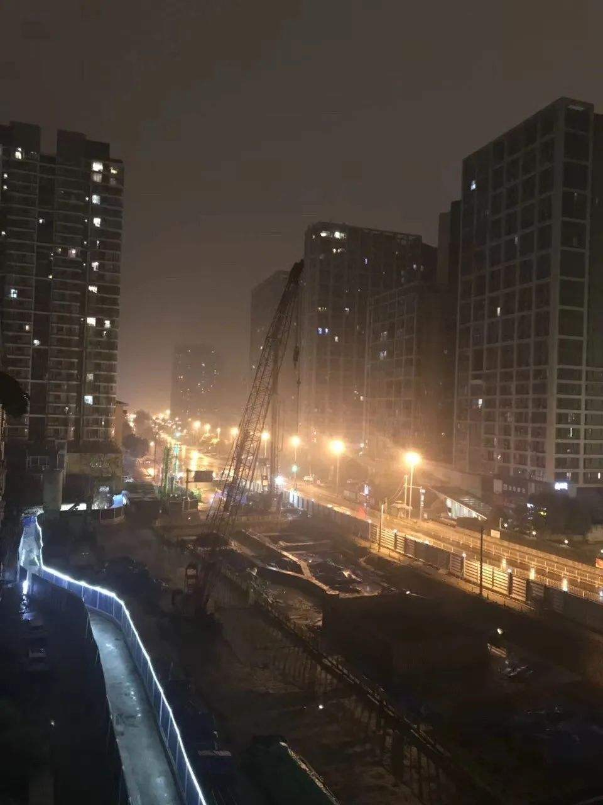
郭晶在1月23日的日记里的配图
“我算是一个遇事冷静和淡定的人，直到1月20日武汉新增病例过百，别的省市出现病例，我开始感到不知所措。”郭晶在第一篇日记的开头这样写道。
她前三天的日记，经朋友整理发到网上，获得了十万加的阅读。BBC中文转载了那篇《一个独居女性的武汉封城日记》，为它配上插画。很多人评论说看后感到安心，能够了解生活在武汉的人的真实状态。一些人给她捐口罩等物资，一个南京网友说要寄盐水鸭。


BBC为郭晶的日记配上的插画
郭晶开始没想到会有那么多人看，得到支持后，“更有动力写下去”。她忠实地记录了自己身为一名普通人，如何应对突如其来的封城。
她先在App上下了订单，担心外卖“随时会停”，又出门去超市抢购。买东西的人排了长队，她遇到一个因为担心可能封城一年而买了很多盐的男人。
她没有车，也没有携带工具，一次拿不了太多东西，所以回家后她再次出门。超市的许多货架空了，大米和面粉所剩无几。药店开始控制人进入，感冒药限购，口罩和酒精被抢购一空。
她后知后觉地对第一趟出门成功抢到物资，产生了“绝望的欣喜”，同时感到害怕，继而又觉得“即便封城应该还是会有日常生活用品供应”。晚上躺下后，她哭了一次。
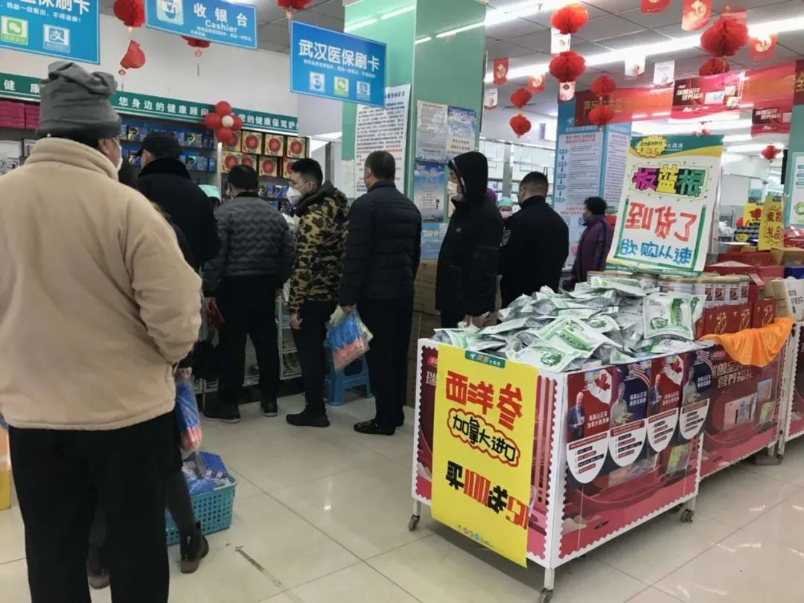
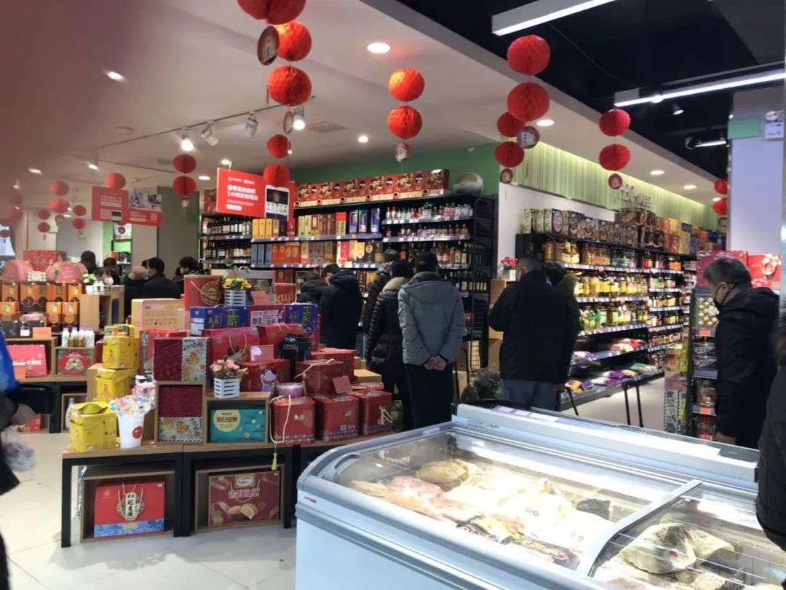
她的日记透露着不安和焦虑，因为对生活失去了掌控感和力量感。
作为一名社工，也是一名二级心理咨询师，她喜欢理性思考，生活有序。但忽如起来的封城打乱了一切，没有通知说封城会持续多久，人们的生活有没有保障。所以在一开始，囤积物资是最本能的，也是最有用的自救行为。

排队购物的人
而独居意味着她只能靠自己。
她在武汉没有朋友，也没有加社区的微信群，获取信息的渠道只有互联网。在最初的几天，网上的传播是混乱的，真实的信息和虚假的谣言混杂在一起，滋生了许多恐慌和愤怒。她没法判断它们的真假，更重要的是，作为一个异乡人，她不了解周围的环境。
事实证明，写日记对梳理思维和生活有所帮助。她花了大概一周时间，重拾了自己对生活的掌控感和力量感。
她每天九点左右起床，只比正常时候晚一点点，然后跟着keep运动半个小时，已经连续打卡了五百四十四天。如果天气好，她会外出。下午的时候用一两个小时写日记，晚上和朋友视频，二十四点左右睡觉。在大年初一那天，路过花店时她买了一盆绿萝。

来武汉的两个月，郭晶大半时间里深居简出。
外出时她去过东湖，在汉口看了场电影，在武昌的江滩跑步，最远的一次去江夏爬了六个多小时山，全程二十几公里。但对这个城市以及生活在其中的人，她依然显得陌生。
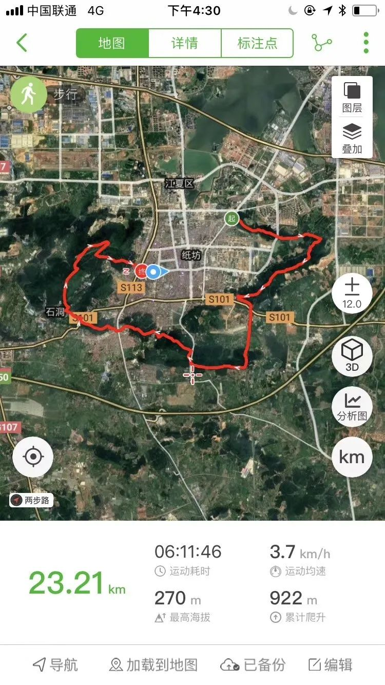
所以封城后，她果敢地决定出门。出门让她不再隔绝，与人有了交际。她观察路人，计算遇到的数量，留意他们买了什么东西，和其中一些——比如当时还在营业的腰花面店的老板聊天。她的目的是了解别人的生活，“让我觉得慢慢跟这个世界有了一些联系”。
看到外卖员还在送餐，她感到安慰，“外卖是一个象征，是城市生活还在运行的一个标志。”

外卖小哥

废墟里的流浪猫
但她心里更多的，还是因情况不明确而产生的焦虑。
她每天都要去超市和药店走一遭，“像是在抓住最后一些可以抓住的东西”。口罩和酒精依旧无货。她囤了足够吃一个月的食物，还是忍不住购买。“匮乏让人没有安全感，尤其在这种有关生存的极端情况下。”
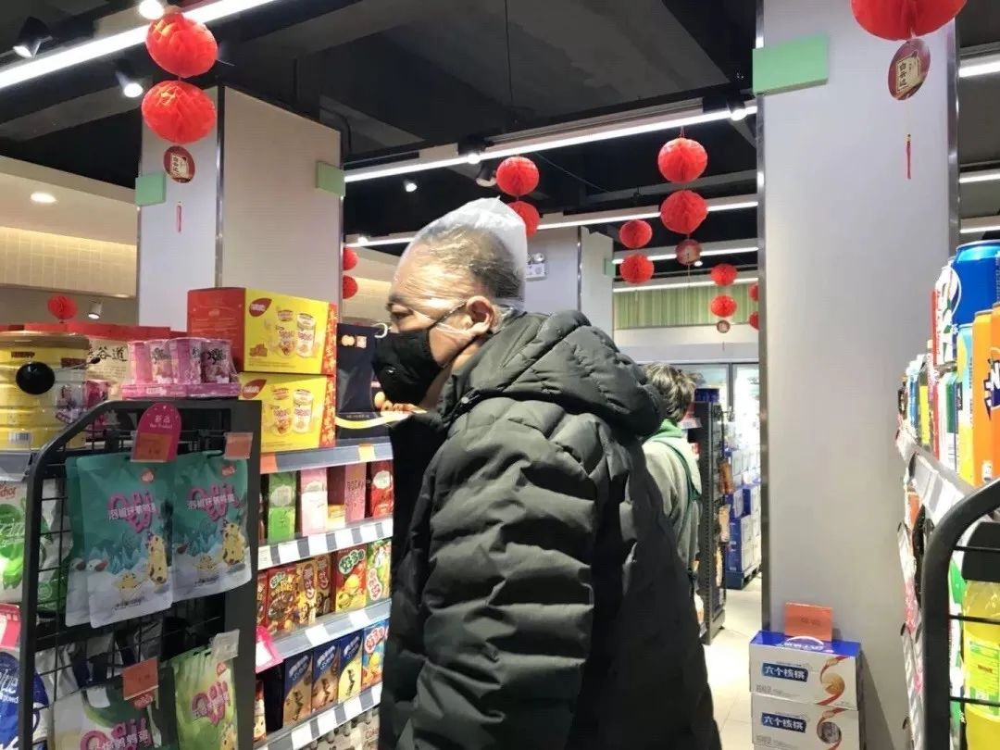
超市里头戴塑料袋的顾客
她有意地开始控制饮食，每顿一个菜，量是平时的一半。中午和晚上喝白粥，为了减少刷锅的次数，会一次熬一天的量。当然，年夜饭没有减量，她煮了三百克玉米蔬菜猪肉馅的饺子，又做了五个红烧鸡翅。
过年她没有回家，一开始也没告诉家人自己身在武汉。所幸他们彼此身体健康，都没有感染病毒。

郭晶的年夜饭
外出时，她会采访遇到的环卫工，“觉得环卫工的状况最差，没有保障，就想多了解一下”。情况不太乐观。这是一个长期处于边缘位置的群体，媒体很少关注，但疫情期间同样需要工作。
她发现他们缺少保护措施，只有很少几个口罩。有一个大姐告诉她，他们中很多都不是正式工，如果不工作，一天要扣一百五十块，而日工资只有七十。他们不清楚有没有补贴。他们的人生各有各的不幸。告别时，她会送环卫工几个口罩，互道保重。有的隔天再见，会和她打招呼。
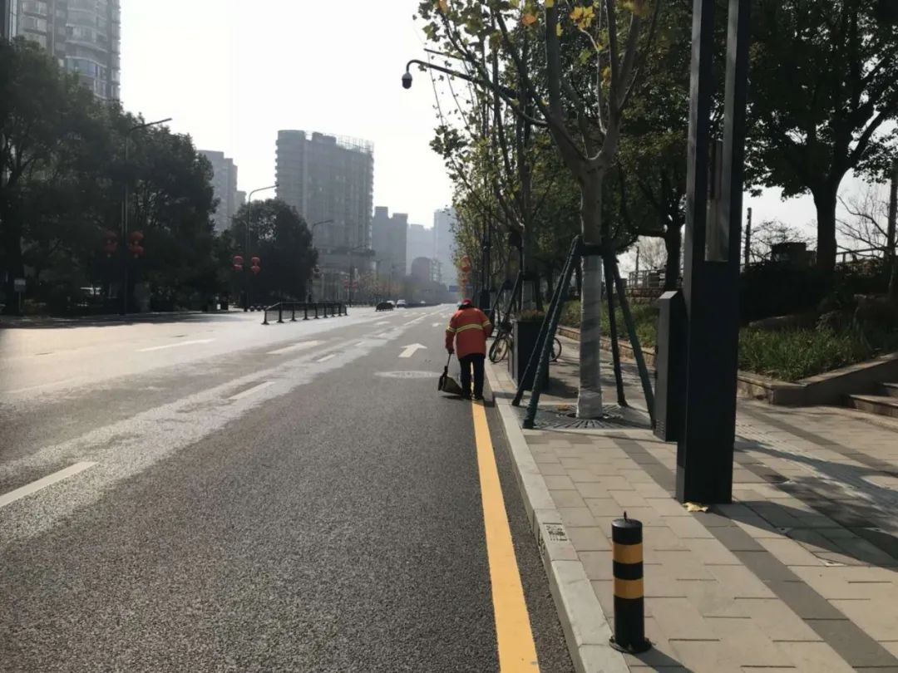

环卫工人和手套
进入二月后，外省往武汉捐赠物资，超市里的蔬菜得到补充，气氛也就不那么紧张。
郭晶在路上遇到的人多了起来，有人戴着口罩跑步，有人使用健身器材，还有人在江边打太极。
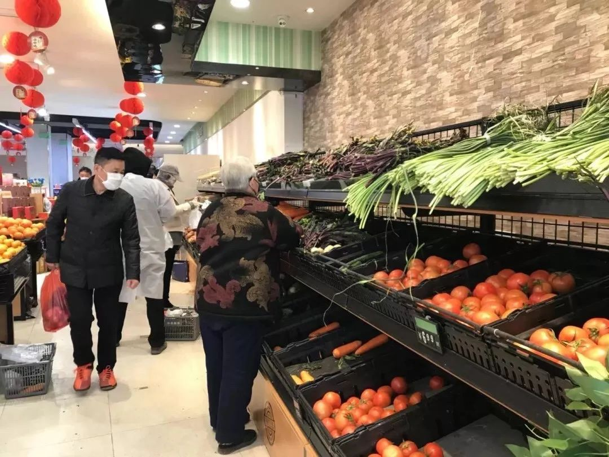
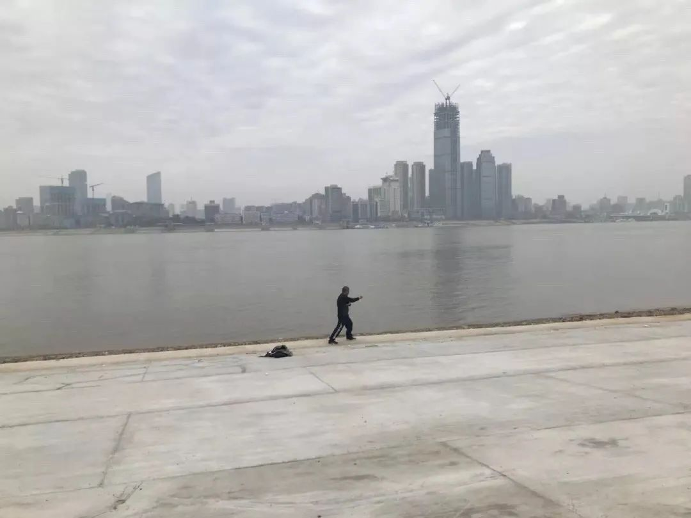

她在2月3日的日记里写道：
“每天出门成为我的一个重要日常。其实我已经觉得出门不是必要，可我还在偏执地坚持。我在坚持什么？这个城市不会在明天突然解封，外面不会在一日之内发生翻天覆地的改变。这其实是一个微小的反抗，在信息的封锁中寻找真实的信息，在隔离中寻求和他人的联系，在不确定中寻找某种确定性。”
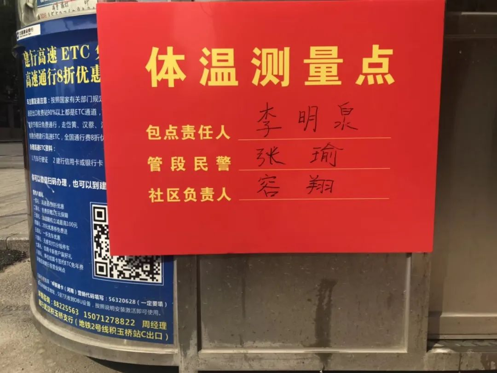

江滩绿道

李文亮去世那天，郭晶又哭了一次。作为个体，在这次疫情期间，很多时候没有选择，只能被迫地“随波逐流”。像是某种宿命论。她写了一些话，后来日记被限流。
接着在2月中旬，武汉各小区实施封闭管理。郭晶最初觉得“需要帮助的人很多，我还可以自己照顾自己，可是，现在我被迫需要帮助”。
她从自由出门，变成三天一出，再变成无法外出。为了买菜，她加了社区的微信群，开始研究超市的AB套餐和各种团购接龙。


出入证
她对封闭管理和团购，同样发出了作为受到影响的个体的质疑，但措辞比前几天温和不少。她连着写了很长时间的封城日记，经历过许多愤怒、伤心、无力，最后变得有些麻木——她没有停止思考和记录，但被太多糙心事打击得疲惫不堪。
除了不能出小区，她的出租房在暴雨中漏水，拖把和锅也坏了。“我都没有了‘今天周几’的概念，只有‘今天’和‘明天’”。

出租屋里漏水的墙上的插座
她的日记中少了外出的见闻，增多了和朋友的讨论。
她的不少朋友也是社工志愿者，且都是女权主义者，所以讨论的内容经常与女权有关。他们担心女性会在疫情造成的裁员中受到不公正待遇。他们讨论女性不平等的来源，以及女性的牺牲和痛苦。

甘肃被剃光头的女护士，图片来源于网络
在甘肃女护士剃光头的新闻成为热点时，郭晶写道：
“头发关乎的不只是外貌，而是尊严。剃头是否必要？是否经过同意？女性的身体从未真正属于自己，总是有人比女人自己更有权力处置女人的身体。”

社区团购的肉
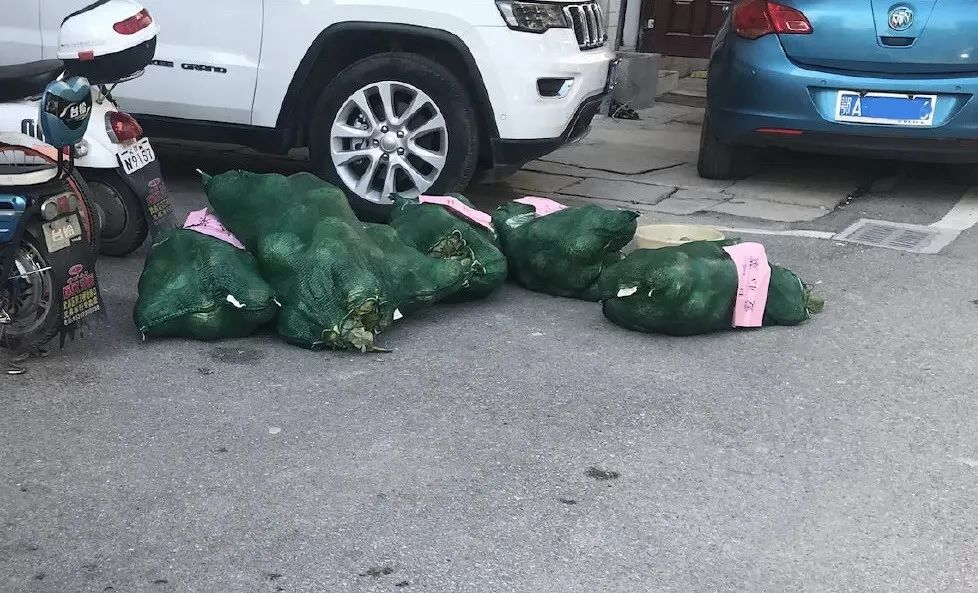
爱心包菜
作为一名社工，她对这类新闻格外敏感。她在2017年发起“074职场女性法律热线”，为遭遇性别歧视等职场问题的女性提供经验和法律上的帮助。
团队在线上工作，没有固定的办公地点，求助者拨打074热线，会直接转接到手机，所以受疫情影响不大。在疫情期间，她接听了一对武汉夫妻的电话，女性在国企工作，因为怀孕受到公司的隐性劝退。
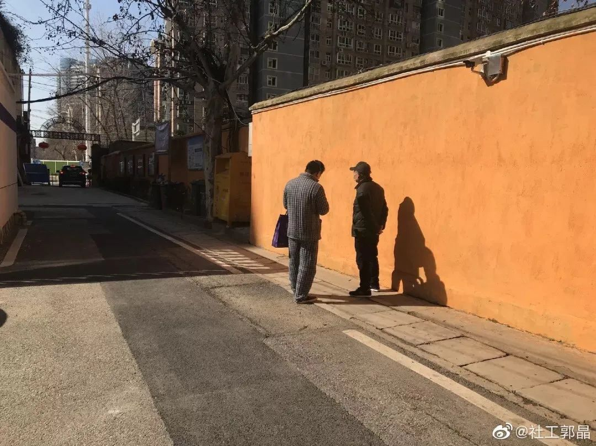

小区里晒太阳的人
前段时间天气好的时候，郭晶会坐在楼下晒太阳。
小区里一些住户同样下楼散步。一个中年男人用手机放着戏曲。一些人摘下口罩抽烟。偶尔有女人下口拿菜或丢垃圾。有人在楼外晒床单、枕头。生活平静，还在继续。
text | 王博璨
photo | 由受访者提供
💬
# 你用什么抵抗封城后的孤独时光？#


原文链接 备份链接 编者荐语： 马子本来计划春节出游，结果回来过个年，就因疫情封城动弹不得了。我俩见个面都难。天门疫情确实严峻，希望大家能多给予关注。瘟疫面前，命无贵贱，人人平等。 © 图文 阅路山 2020年2月4日 立春 武汉封城的 …
原文链接 备份链接 本文由娱志The Review原创出品 华东师范大学传播学院学生娱评号 转载需申请授权 作者 | Moe，苏博 编辑 | 华实 导语 “自2020年1月23日10时起，全市城市公交、地铁、轮渡、长途客运暂停运营；无特殊 …
原文链接 备份链接 武汉已从阻击战转为反击战。欧洲疫情迅速蔓延，单日新增近千 2020年2月26日，在马来西亚雪邦，从武汉撤回的马籍民众抵达当地机场机场。图/ 法新 文 |《财经》数据研究员徐进 图 |《财经》视觉中心 编辑 | 郝洲 …
原文链接 备份链接 若干年后回望，这一定是一段值得铭记的日子。因为新冠肺炎疫情，许多家庭无法团圆。疫情数据地图的每次刷新都令人揪心。我们和千万武汉人在一起，这不只是一句安慰，因为没有人能够置身事外。 之前，我们向用户征集这段时间的故事， …
原文链接 备份链接 受疫情影响，今年春节很多人没有办法回到家乡，只能独自留在工作的城市中。今天的来信者就是其中一位，疫情爆发之后她一直独自留在北京。往日的正常生活仍然没有露出回归的迹象，只有一场暴雪如期而至。 真正要生活的人必然得是坚韧 …